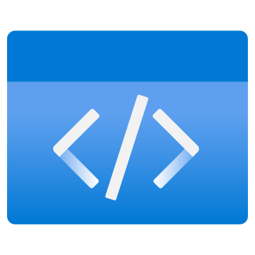
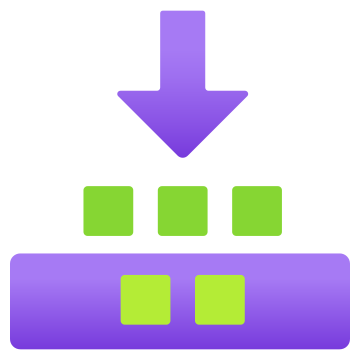
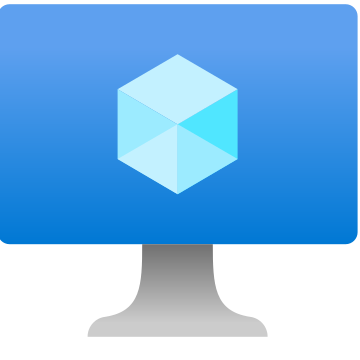
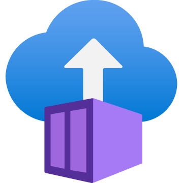

Containerization and deployment to AKS
You already know how to promote code-complete software through configured dev, test, UAT, and production environments. This workshop implements the same release objective with containers: derive a container contract, build and register one immutable image, promote it through containers → Kubernetes → AKS, then observe, diagnose, and optimize the running workload.
Select a delivery mode
Both modes use the same activities, validation steps, progress tracking, and knowledge checks. The selected mode is saved in this browser and can be changed from the lab guide.
Self-paced
Work through each phase independently. Participant instructions, checks, and reference links remain visible; trainer talk tracks and demo cues stay hidden. Plan 16–18 hours — the foundation and implementation activities plus the required reading, knowledge checks, and operational reflection.
Start self-paced →Instructor-led
Use the same lab with trainer framing. Each phase includes an instructor-only talk track, discussion prompt, or demo cue to support cohort delivery. Plan about 11–12 hours of guided hands-on activity.
Start instructor-led →Workshop reading
Complete the required reading before starting the workshop. It covers cloud-native patterns and Azure concepts such as landing zones, some of which are configured only in the follow-on replatform workshop. The recommended articles provide additional context for organizing application architecture around cohesive features and modules.
Read before starting
- Cloud Design Patterns — Azure Architecture Center
- What is an Azure landing zone?
- AKS architecture fundamentals
Code-complete release promotion
Skybridge Messaging Services is a code-complete real-time bus over persistent TCP sockets. Its Java gateway, C/C++ parser, operations console, and database integration have passed development. The next objective is to test and promote that release through the configured deployment stages.
Environment-based promotion
A build artifact moves through dev, test, UAT, and production. Each long-lived environment supplies installed runtimes, dependencies, configuration, and accumulated state. The workshop uses this process as the comparison point rather than repeating its deployment steps.
Immutable-image promotion
Runtime and dependencies travel with each component in an immutable image. Environment-specific configuration is injected at runtime. The same registered image is exercised locally, promoted to Kubernetes, and operated on AKS without rebuilding between stages.
The unit of promotion changes
The workshop covers changes in four operational areas — in deployment, configuration, the development lifecycle, and operations — with their container and Kubernetes equivalents, ending on an AKS cluster.
Test the three workflows hands-on →The workflow changes before the cloud does
Source and validation remain. What changes is the promoted unit, where runtime dependencies live, and who maintains the running state.

SourceApplication code
Build artifactJAR, binary, package
Configured hostRuntime and dependencies installed here
Container runtimeRuns the image with injected configThe same promotion models mapped to Azure
Azure supplies managed services at each stage. Containerization standardizes the deployable unit; AKS adds managed Kubernetes orchestration.
Environment model Deployment
- Artifacts copied onto a long-lived host with
scpand a runbook - The host is maintained in place and can drift from its peer
- Results depend on the runtime and dependencies installed on each host
- Rollback repeats the deployment procedure with an earlier artifact
Container model Deployment
- An immutable image is the unit of promotion, built once and tested repeatedly
- Hosts are replaceable; the image carries its own runtime
- The image provides a consistent runtime and dependency set
- Rollback selects the previous immutable image reference
Environment model Configuration
- Settings hand-edited in files on each box, secrets in plaintext
- Environment differences are difficult to track
- A configuration change requires a host login unless the process is automated
Container model Configuration
- Configuration comes from the environment rather than the image
- The same image can use different configuration at each stage
- Secrets are injected, not committed; config is declarative and reviewable
Environment model Development lifecycle
- The build and target host may have different dependency versions
- Testing, scanning, and promotion can require separate manual steps
- Artifact provenance depends on the release records
Container model Development lifecycle
- A pipeline builds, tests, scans, and pushes an image on every commit
- Commit SHA tags associate images with source revisions
- The inner loop (Compose) mirrors the outer loop (registry + CI)
Environment model Operations
- Regional high-availability pairs require host-level configuration and failover procedures
- Process monitoring and restart behavior depend on host automation
- Vertical scaling can require VM replacement or a maintenance window
Kubernetes model Operations
- Kubernetes replaces failed Pods and manages rolling updates according to the workload specification
- Horizontal scaling changes the requested replica count
- On AKS, Azure manages the Kubernetes control plane
Nine phases from source code to AKS operations
Each phase is a short, hands-on block sliced into 15–20 minute activities. Every activity has a pre-check, steps to run, a validation gate, and a post-check. The replatform lab uses the same structure.
Orient from the model you know
Verify the code-complete release and contrast configured-environment promotion with immutable-image promotion.
Derive the container contract
Turn familiar runtime assumptions into explicit image, configuration, health, security, and resource requirements.
Separate image from environment
Externalize settings and secrets, then run one build with dev, test, and UAT configuration.
Build and operate the containers
Build minimal, non-root Java, C/C++, and console images; inspect their logs, processes, networks, and resource behavior.
Run the system with Compose
Run gateway, parser, console, and Postgres together; validate health, discovery, persistence, and end-to-end behavior.
Register and automate
Test, scan, label, tag, publish, and pull immutable images through CI; record the contract each runtime must satisfy.
Kubernetes: Pods, Deployments, and Services
Move the containers to a local cluster with configuration, probes, resources, reconciliation, rollout, and rollback.
Deploy the workload to AKS
Provision AKS, integrate ACR, deploy the same workload definitions, and expose the gateway.
Observe, diagnose, and optimize on AKS
Measure under load, investigate failures with logs, events, and metrics, tune one constraint, and compare the measurements.
Workshop objectives
Explain the cost of manually managed hosts
Identify how host patching, configuration drift, and manual release steps affect deployment consistency.
Externalize all config
Change an application that stores configuration on the host to read per-environment settings at runtime.
Write Dockerfiles for the workshop components
Produce small, layer-cached, non-root images for a JVM service, a compiled C++ binary, and a static site.
Run the system locally
Bring the whole estate up with one compose up, including a database and service-to-service networking.
Apply traceable image versions
Tag by semantic version and by commit SHA, push to a registry, and reason about mutable vs immutable tags.
Automate the build
Configure CI to build, test, scan, and publish an image for each commit.
Orchestrate on Kubernetes
Turn Compose services into Deployments and Services with externalized configuration, then test replacement, scaling, and rollback behavior.
Deploy to AKS
Provision a managed cluster, push images to ACR, deploy the same manifests, and serve traffic through an AKS load balancer.
Operate with evidence
Use workload state, logs, events, metrics, and controlled load to diagnose a failure and compare a configuration change with the baseline.
Where this workshop ends and the replatform begins
This workshop deploys the components to a managed cluster using images built by CI and pulled from ACR, then covers observation, diagnosis, and resource tuning. It does not configure the cluster for production. The following replatform workshop starts from a public, single-pool, manually applied deployment.
Starting point for the replatform workshop
The next workshop, Replatforming a Real-Time Messaging System to AKS, takes your working deployment and re-architects it for production: Day-0 decisions, a private zone-redundant cluster, workload identity, the Istio mesh, GitOps rings with gated promotion, autoscaling, and cross-region failover. It assumes a workload already runs on AKS, as configured in this workshop.